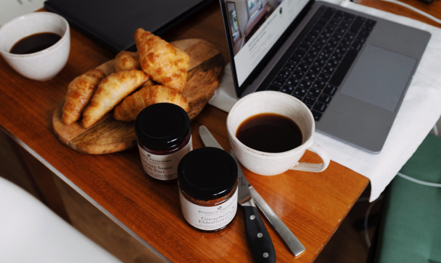
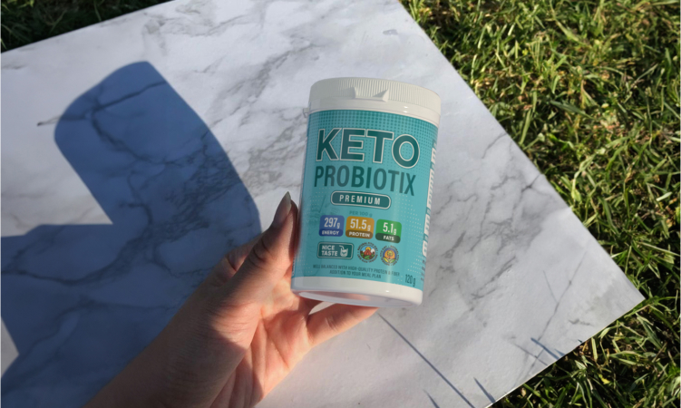

Ho quasi perso il mio amore per la pasticceria...
 - 17 Luglio 2023
- 17 Luglio 2023
Voglio condividere una storia che è quasi finita male per me.
Ciao a tutti. Non ne ho mai parlato. E non mi piace lamentarmi. Ma mi è successo quello di cui avevo tanta paura: la mia vita si è quasi trasformata in un inferno in un istante.
Fin dall'infanzia amo i pasticcini. Crescendo ho iniziato a cucinarli tutti i giorni a casa.

Cupcakes, muffin, crostate, torte: non è stato difficile per me alzarmi presto la mattina per cuocere qualcosa di delizioso prima del lavoro.
Prima della pandemia lavoravo in ufficio come designer e poi siamo stati trasferiti in una località remota. Ora il mio posto di lavoro era a casa e cucinare era ancora più facile. Potrei mettere il cupcake nel forno tra un compito e l'altro. Mi piaceva soprattutto quando nel frigorifero era rimasta la pasta sfoglia e ho già cotto la pasta sfoglia con la marmellata per il mio caffè mattutino. Come capisci, ho mangiato molti cibi ricchi di carboidrati, ma non mi muovevo molto a causa del lavoro. Non mi piace andare in palestra e la più vicina è piuttosto lontana da casa mia.
E mi sono pesata tutti i giorni, ma non ho notato alcun cambiamento. C'era sempre molta energia. A pranzo potrei comunque uscire con le mie amiche a mangiare pizza, hamburger o pasta.
Un momento ha cambiato la mia vita...
Stavo tornando a casa dopo una passeggiata con le amiche. Sulle strisce pedonali mi faceva molto male lo stomaco. Ero stravolta dal dolore, nel vero senso della parola. A causa di ciò, mi sono fermata bruscamente e per poco non sono stata investita da un'auto. Più precisamente, se avessi fatto almeno un passo, allora sarebbe andata a sbattere contro di me. Ero molto spaventata, mi tremavano le gambe e le braccia, dentro tutto si contraeva e continuava a farmi male. Ho vomitato per strada e sono svenuta.
L'ambulanza è arrivata e mi ha riportato in me. Hanno detto che è necessario sottoporsi a un esame per determinare la causa di questa condizione. Ma in quel momento ho rifiutato il loro aiuto. Ero spaventata e sono tornata a casa.
Ho iniziato ad aumentare di peso. E così velocemente che nello specchio ogni giorno era come se una persona diversa mi stesse guardando. A tutto questo si sono aggiunti dolori addominali, gonfiore costante, le gambe hanno cominciato a gonfiarsi e ad intorpidirsi.
Ho smesso di piacermi. E anche degli altri
Le mie amiche raramente mi chiamavano per la pizza. Hanno detto: "Faresti meglio a non mangiarlo, incontriamoci un'altra volta". Ma "l'altra volta" non è mai avvenuta. Sono stato ferito da questo. Ho iniziato a mangiare ancora più dolci, mangiando stress. Con gli uomini, come capisci, non ci sono riuscita neanche io. Nessuno mi ha prestato attenzione. Più precisamente disegnato, ma solo per le mie grandi dimensioni. Sono rimasta sola con me stessa. E questa solitudine continuava ogni giorno. Ho cercato di uscire di casa meno spesso, in modo che mi guardassero di meno e mi toccassero le dita.Ho raggiunto il limite e il mio corpo non lo sopportava
È successo tutto il giorno in cui è iniziata la mia vacanza. Sei mesi fa, abbiamo concordato con le amiche che avremmo trascorso una vacanza insieme: saremmo andati al fiume o al lago con le tende. Ma la mattina non riuscivo ad alzarmi dal letto. Il mio stomaco faceva molto male e non avevo la forza. L'ambulanza mi ha portato. Ho trascorso tre ore in ospedale per un esame. Ho fatto una risonanza magnetica, una TAC, un sacco di test. Per tutto questo tempo sono stato trasportato su una barella speciale dell'ospedale, perché mi era difficile persino sedermi. Il dottore mi ha chiamato alla conclusione. E quello che ha detto mi ha scioccato. "Valentina, hai lo stadio iniziale della patologia endocrina." Non ho capito bene cosa fosse. Ma il dottore ha spiegato in termini semplici: una Donatellazione del metabolismo. Se continui a vivere come ho vissuto io, potrebbero esserci conseguenze irreversibili. Il fallimento del ciclo mestruale si aggiungerà allo svenimento, alla perdita di forza e all'obesità, i peli del viso aumenteranno e la temperatura corporea diminuirà. A tutto ciò si aggiungeranno problemi al tratto gastrointestinale, possono comparire diabete mellito e malattie del sistema ipotalamo-ipofisario. La vita si trasformerà in un continuo disagio. Lo stadio avanzato è fatale. "Cosa devo fare adesso?! chiesi con preoccupazione nella mia voce. Il dottore mi ha rassicurato e ha detto che avevo una fase iniziale. E la causa principale dello svenimento è l'obesità. È da lì che devi iniziare. Mi ha consigliato un rimedio di cui non avevo mai sentito parlare prima. Si chiama Keto Probiotix.  A causa dei componenti attivi nella composizione, il prodotto favorisce la produzione di corpi chetonici, che aiutano ad attivare i processi naturali di perdita di peso. Affinché i corpi chetonici vengano prodotti più attivamente, è necessario aggiungere sport e una corretta alimentazione. Così ho chiamato lo stesso giorno e mi sono prenotato subito un abbonamento di tre mesi. Con l'uso di Keto Probiotix, ho sentito un'ondata di forza. Non volevo più cibo spazzatura, i viaggi per mangiare la pizza con le mie amiche erano finiti. Non pensavo esistesse uno strumento del genere. Se l'avessi saputo prima e avessi letto le recensioni, non avrei trattato il mio corpo in questo modo. Non è di ferro. Questa situazione mi ha fatto capire che non puoi lasciarti andare così. E ora sono stata più attenta con la cottura delle torte. Lo cucino raramente. Il medico mi ha indicato il sito ufficiale del produttore, dove posso ordinare Keto Probiotix. Sono stata fortunata, perché sono arrivata all'azione -50%! Anche la consegna mi ha fatto piacere: il giorno dopo il corriere aveva già portato la merce. Ho seguito il corso Keto Probiotix e una volta alla settimana controllava le misurazioni e pesava. Non credevo ai miei occhi: i chilogrammi sembravano sciogliersi davanti ai miei occhi, il mio stomaco ha smesso di farmi male e lo svenimento è finito.E questo nonostante non sia morta di fame, ma in palestra ho preso un peso normale. Sono molto felice dell'occasione e dell'aiuto di Keto Probiotix. Sì, ho dovuto smettere di mangiare pasticcini senza sosta. Ma non ci ho rinunciato completamente, , perché con Keto Probiotix so che l'eccesso di peso non mi darà fastidio. Una questione di fortuna o un segno dall'alto, ma dopo che ho iniziato a prendere il rimedio, ho incontrato il mio uomo. Ha detto che ha usato Keto Probiotix, quindi, mi capisce come nessun altro. Ora ho quasi raggiunto il peso e la figura che sognavo da bambina. Ma poi prenderò il rimedio come misura preventiva in modo che la situazione non si ripeta. Se vuoi goderti di nuovo la vita, ridi invece di piangere nel cuscino di notte e non ripetere il mio
destino, ordina immediatamente Keto Probiotix. Aggiungi il rimedio alla tua dieta e noterai come il peso
inizia a cambiare e non ci sarà più pesantezza allo stomaco dopo aver mangiato.
Keto Probiotix ti semplificherà la vita e ti semplificherò la ricerca, quindi lascio un link al sito
ufficiale del produttore e il modulo di feedback di seguito. Devi solo compilarlo e riceverai subito una
chiamata dal gestore per concordare i dettagli. Ora la promozione è ricomparsa e Keto Probiotix può essere
acquistato con uno Sconto del 50%! Sbrigati, perché questa è la tua occasione per una nuova vita senza
eccesso di peso! ordinato tre confezioni di riserva!
Auguro a tutti buona fortuna e perdita di peso!
Se vuoi goderti di nuovo la vita, ridi invece di piangere nel cuscino di notte e non ripetere il mio
destino, ordina immediatamente Keto Probiotix. Aggiungi il rimedio alla tua dieta e noterai come il peso
inizia a cambiare e non ci sarà più pesantezza allo stomaco dopo aver mangiato.
Keto Probiotix ti semplificherà la vita e ti semplificherò la ricerca, quindi lascio un link al sito
ufficiale del produttore e il modulo di feedback di seguito. Devi solo compilarlo e riceverai subito una
chiamata dal gestore per concordare i dettagli. Ora la promozione è ricomparsa e Keto Probiotix può essere
acquistato con uno Sconto del 50%! Sbrigati, perché questa è la tua occasione per una nuova vita senza
eccesso di peso! ordinato tre confezioni di riserva!
Auguro a tutti buona fortuna e perdita di peso!
Aggiungi un commento
Altri articoli dell'autore
Chip per designer
Non dovrai più pensare a cosa cucinare
Esercizi domestici per la salute della schiena